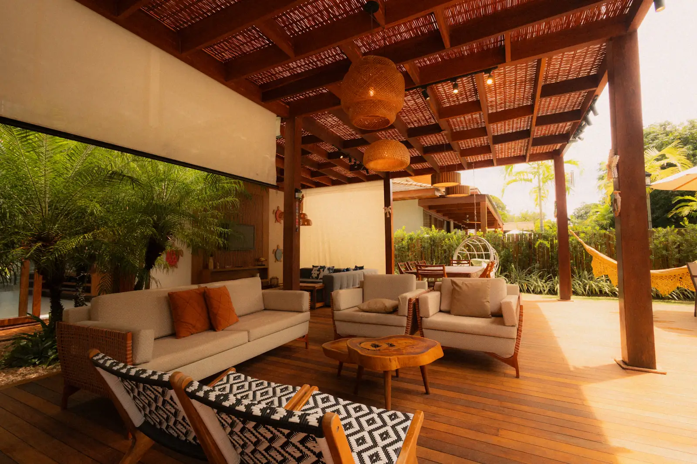
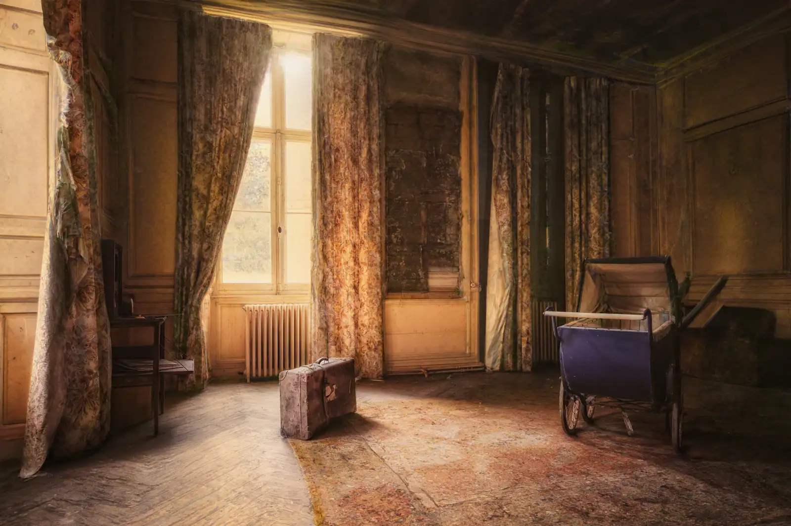
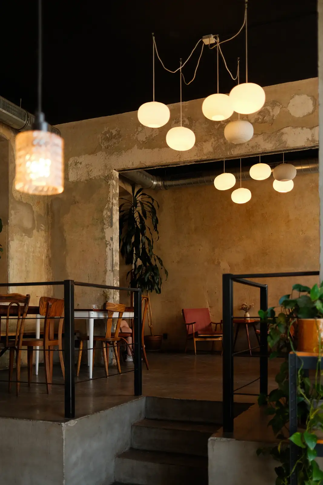
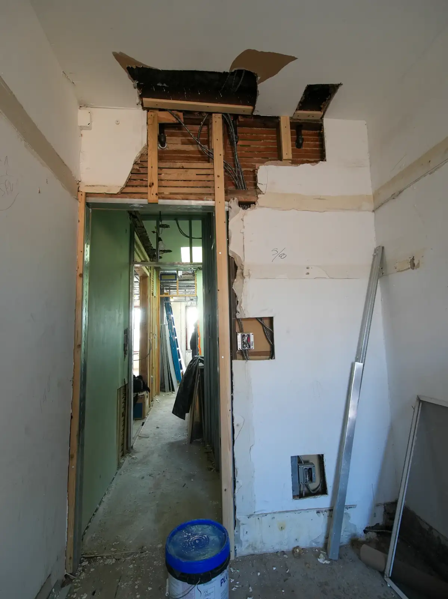
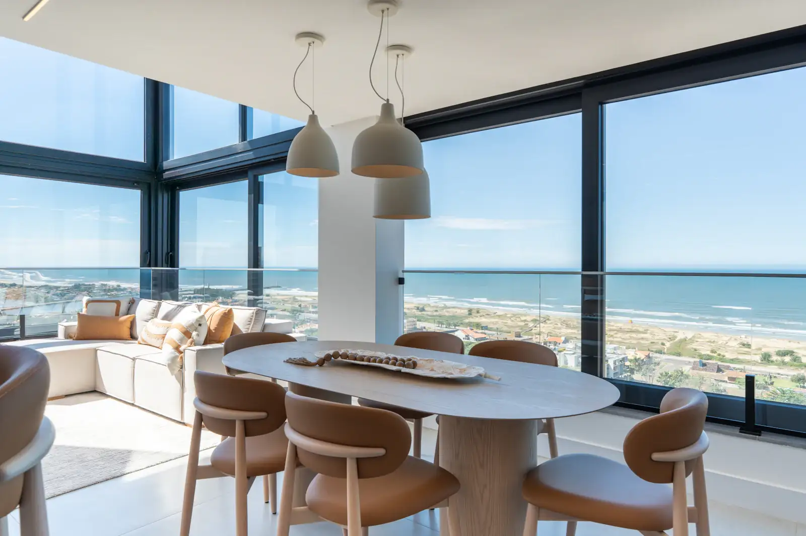
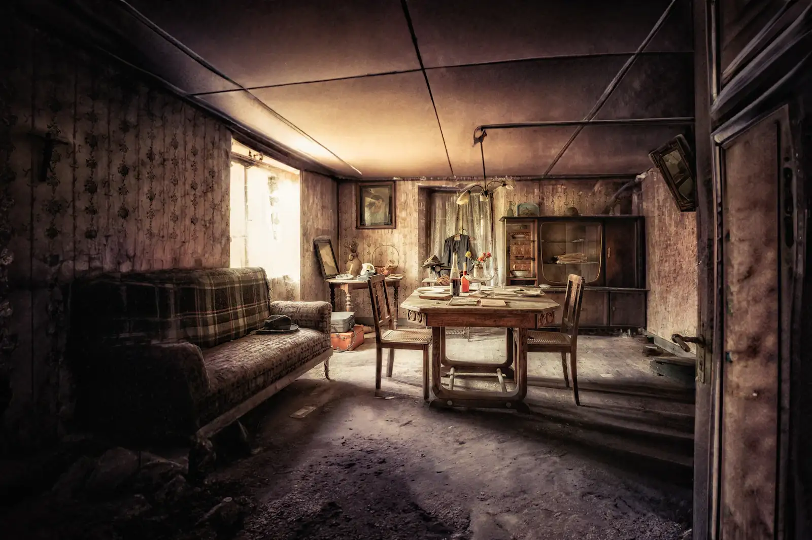
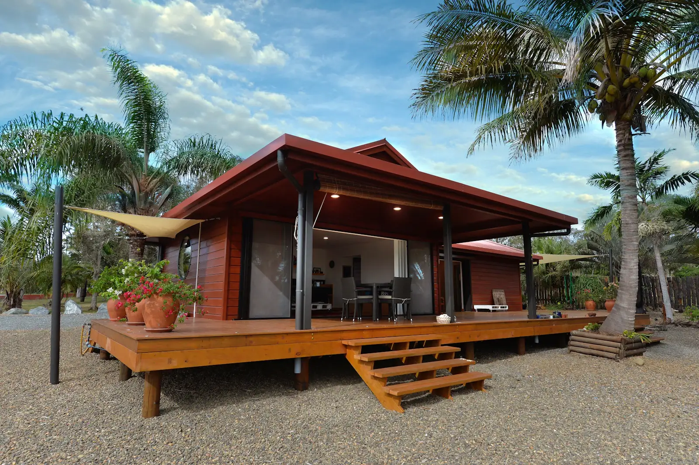
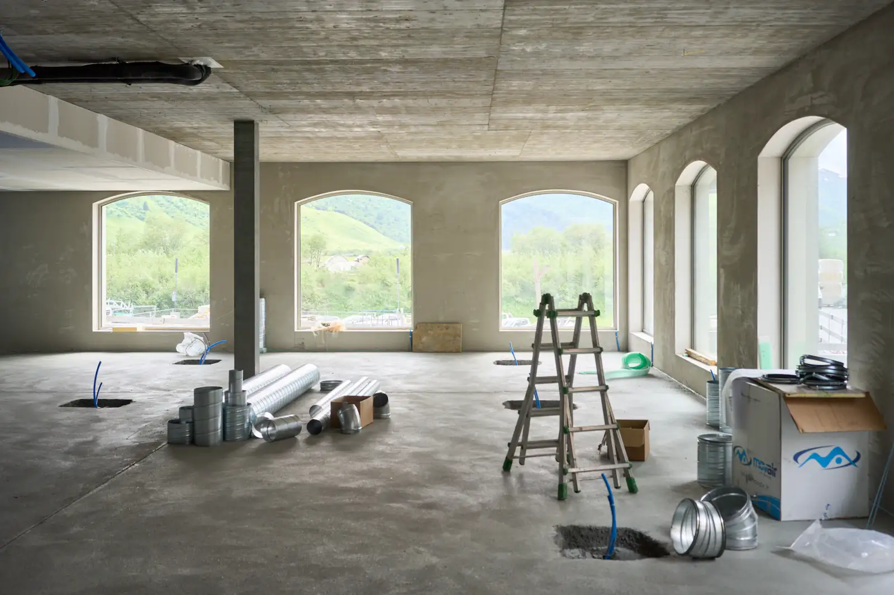
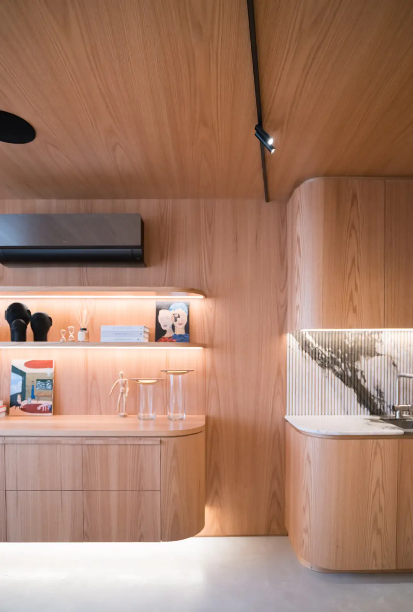
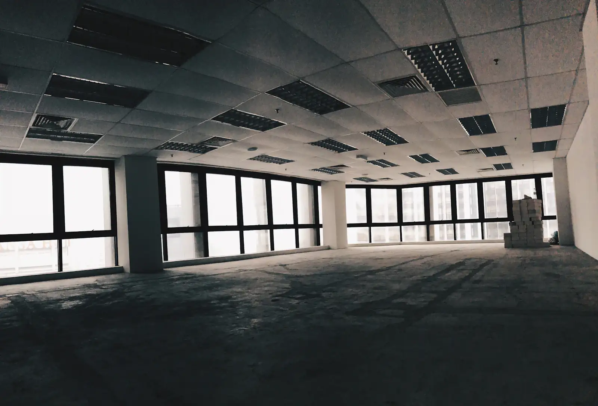

Cinco obras recentes. Arraste a linha sobre a foto para ver como era; clique no nome para abrir a folha da obra, com ficha técnica e o que deu trabalho.
Fotos sem filtro. A do antes também, e às vezes ela dói mais no dono do que na gente.










Cada obra tem um mestre, um arquiteto e um diário. Nenhuma tem estagiário sozinho no canteiro.
A primeira visita não custa nada. Você mostra a casa, a gente faz as perguntas chatas e sai de lá dizendo se a obra faz sentido.
Marcar uma visita Ou chamar no WhatsApp, (84) 99188-0412